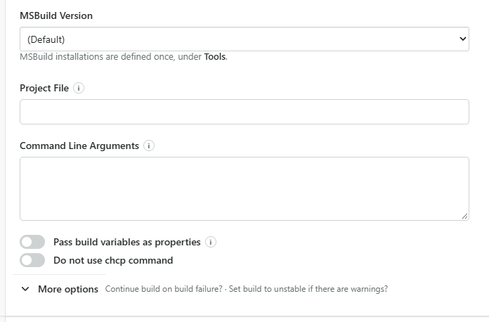

MSBuild
Builds a Visual Studio project or solution with MSBuild. MSBuild installations are defined once, under Tools.
When to use it
Use it for C# and C++ solutions that need the full Visual Studio build tools: your engine tools, plugins and anything with a .sln. Run it on a Windows agent that has Visual Studio or the Build Tools.
How to set it up
- Open the build configuration and click Settings › Build Steps.
- Click Add build step. Type
MSBuildin Filter step types if you like, then click the MSBuild tile (group Build tools). - Type a Step name, for example
Build tools. - Fill in the fields described below.
- Optional: set Execute step, Conditions and Retry on failure. See The steps list and the step editor.
- Click Save.

Every field
| Field | What it does | Default | Example |
|---|---|---|---|
| MSBuild Version | The MSBuild installation to use, chosen from the ones defined under Settings › Tools. (Default) uses the default installation. If none is defined, the step asks you to add one. | (Default) | MSBuild 17 |
| Project File | The .proj or .sln file, from the workspace root. You can use build variables as ${var}. | Empty | Tools/BuildTools.sln |
| Command Line Arguments | A whitespace-separated list, the same as you would type after msbuild. The installation's default parameters are added too. | Empty | /p:Configuration=Release /m |
| Pass build variables as properties | Passes build variables to MSBuild as /p:name=value pairs. Passwords and other sensitive variables are not added. | Off | Off |
| Do not use chcp command | Tick to leave out the chcp code page change that normally runs before MSBuild. | Off | Off |
| Continue build on build failure | Keep the build going even when MSBuild fails. | Off | Off |
| Set build to unstable if there are warnings | A compile with warnings makes the build unstable. | Off | On |
A worked example
Build the engine tools solution in Release. Step name Build tools, MSBuild Version MSBuild 17, Project File Tools/BuildTools.sln, Command Line Arguments /p:Configuration=Release /m.
What you see when it runs
The console shows the MSBuild command line, then its output. Compiler errors and warnings are marked in the log as MSBuild error and MSBuild warning. A failed build fails the step unless you ticked Continue build on build failure.
Problems and fixes
| Problem | What to do |
|---|---|
| The MSBuild Version list is empty | Add an installation under Settings › Tools (open More tool types if MSBuild is not listed). Its Path to MSBuild Installation is the folder with MSBuild.exe, for example C:\Program Files\Microsoft Visual Studio\2022\BuildTools\MSBuild\Current\Bin. |
| Warnings do not change the result | Tick Set build to unstable if there are warnings. |